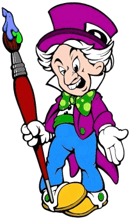

Enter your kits on May 24th - $5 contest fee per model
|
Beginner or Wet Behind The Ears: A forum for the first time modeler. Entries will be judged on the basic techniques of model building and painting, as well as the overfill result. This category is limited to those 16 years old and younger. Two awards: First Place & Runner-Up. Sponsored by: Horizon Open or All The Frills: Intended for the hobbyist, builders who hove mastered the basic techniques of model building and painting. Entrants are encouraged to use advanced experimental techniques for their model building, painting and diorama work. Two awards: First Place & Runner-Up. Sponsored by: GEOmetric. Painting or Mona Lisa: A forum for model makers who wish to work right out of the box. All skill levels are included in this category where ONLY the painting of the actual kit is judged. Kits that have been customized can NOT be included in this category. Two awards: First Place & Runner-Up. Sponsored by: Modeler's Resource. 3D Anime: A forum for both Japanese and American models that have appeared in animation or comic book form. Judging will focus on the entrants skill as a modeler, ability to capture the spirit of the character, as well as how effectively the modeler has brought the character to 3-D life. Two awards: First Place & Runner-Up. Sponsored by: Avatar. There will also be a special People's Choice Award presented to the model kit most liked by the general audience. All winners will receive trophies, merchandise, great publicity, and lots of bock slapping! |
 |
The Gremlins in the Garage webzine is a production of Firefly Design. If you have any questions or comments please get in touch.
Copyright © 1994-1997 Firefly Design.